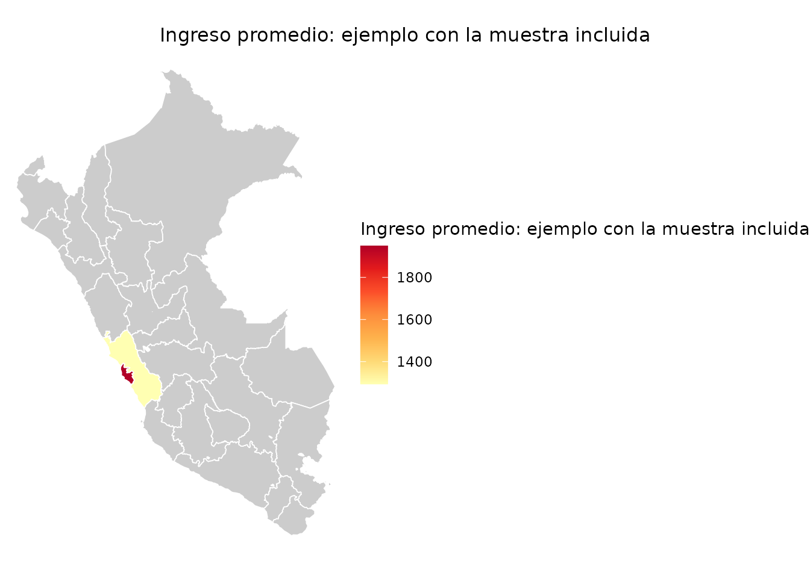

Indicadores ponderados y mapas
Source:vignettes/manual-indicadores-mapas.Rmd
manual-indicadores-mapas.RmdEsta parte del manual muestra cómo obtener estimaciones ponderadas, consultar resultados nacionales ya calculados y representar indicadores en los ámbitos departamentales que publica la EPEN.
indicadores(): calcular ingresos y horas
ponderados
Para qué sirve
indicadores() calcula el ingreso laboral promedio o
mediano y las horas semanales promedio. Puede obtener un resultado
nacional o separar la estimación por sexo, región u otras variables de
la base.
Qué recibe
| Argumento | Uso |
|---|---|
data |
Base con la variable del indicador y un factor de expansión. |
indicador |
ingreso_promedio, ingreso_mediano u
horas_promedio. |
por |
Una o varias variables para formar grupos. |
var_strata |
Nombre del estrato si no se detecta automáticamente. |
var_psu |
Nombre de la unidad primaria de muestreo. |
var_peso |
Nombre del factor de expansión. |
Qué hace por dentro
- Detecta el peso, el estrato y el conglomerado disponibles.
- Elimina del cálculo las filas cuyo peso es ausente o no positivo.
- Cuando existen las variables necesarias, construye una UPM con muestra, región y conglomerado.
- Crea un diseño con el paquete
survey. - Calcula el indicador y su error estándar para el total o para cada grupo.
Qué devuelve
El resultado contiene el nombre del indicador, estimado
y error_std. Si usas por, conserva además las
columnas que identifican cada grupo.
ingreso_sexo <- indicadores(
muestra_epen_2024,
indicador = "ingreso_promedio",
por = "sex"
)
#> Warning: 81 filas eliminadas por peso NA o cero.
#> ℹ Diseno muestral provisional: estrato strata_code y UPM .upm; ver
#> `?indicadores`.
#> This message is displayed once per session.
ingreso_sexo
#> sex indicador estimado error_std
#> Hombre Hombre ingreso_promedio 1606.021 71.54815
#> Mujer Mujer ingreso_promedio 1209.925 71.30004También puedes calcular más de una agrupación:
indicadores(
muestra_epen_2024,
indicador = "horas_promedio",
por = c("sex", "is_rural")
)
#> Warning: 81 filas eliminadas por peso NA o cero.
#> sex is_rural indicador estimado error_std
#> Hombre.0 Hombre 0 horas_promedio 41.67798 0.9767129
#> Mujer.0 Mujer 0 horas_promedio 38.26529 1.3356709
#> Hombre.1 Hombre 1 horas_promedio 33.24925 1.7495960
#> Mujer.1 Mujer 1 horas_promedio 30.51582 1.8736565Cómo interpretar el resultado
estimado incorpora el factor de expansión, por lo que no
equivale al promedio simple de las filas. error_std
describe la precisión bajo el diseño reconstruido por el paquete. Debe
tratarse como provisional: todavía no se ha comprobado que esa
reconstrucción reproduzca los errores estándar publicados por el
INEI.
La muestra incluida contiene únicamente personas ocupadas. Es adecuada para practicar con ingreso y horas, pero no para calcular tasas de actividad, empleo o desempleo.
resumen_nacional(): consultar resultados
precalculados
Para qué sirve
resumen_nacional() permite consultar indicadores que el
proyecto ya calculó con las bases completas. Incluye tasas que requieren
ocupados, desocupados e inactivos, además de ingresos y horas.
Qué recibe y qué devuelve
Puedes filtrar por fuente, año y variante. La función devuelve las
filas del dataset interno indicadores_epen que cumplen esos
criterios.
tasas_2024 <- resumen_nacional(
fuente = "EPEN",
year = 2024,
variante = "departamentos_anual"
)
tasas_2024[, c(
"year", "activity_rate_pet", "employment_rate_pet",
"unemployment_rate_pea"
)]
#> # A tibble: 1 × 4
#> year activity_rate_pet employment_rate_pet unemployment_rate_pea
#> <dbl> <dbl> <dbl> <dbl>
#> 1 2024 0.698 0.659 0.0557Estos resultados son productos reproducibles del pipeline del proyecto. Al citarlos, identifica la fuente y la variante; no los presentes como una API o una tabla oficial publicada directamente por el INEI.
mapa(): representar un indicador por ámbito EPEN
Para qué sirve
mapa() une una tabla de resultados con los 25 ámbitos
departamentales que publica la EPEN y produce un mapa estático o
interactivo. Estos ámbitos no son idénticos a los 25 departamentos
político-administrativos: la encuesta agrupa la provincia de Lima y la
Provincia Constitucional del Callao como Lima Metropolitana y
Callao, y separa las demás provincias del departamento de Lima
como Región Lima.
La función espera datos ya agregados, con una fila por ámbito; no calcula el indicador dentro del mapa.
Qué recibe
| Argumento | Uso |
|---|---|
data |
Tabla con una fila por ámbito EPEN. |
var |
Columna numérica que se representará con colores. |
nivel |
Solo "departamento" en esta versión. |
tipo |
ggplot para una figura estática o leaflet
para un mapa interactivo. |
titulo |
Título del mapa y de la leyenda. |
paleta |
Paleta de colores. |
shapes |
Polígonos propios, con una columna geo_id, si no deseas
usar los incluidos. |
Qué hace por dentro
- Busca
CCDDoregion_code. Para los códigos distintos de15, esa llave identifica directamente el ámbito. - Para el código
15, exige ademásDIVISION_LIMAodivision_lima: el valor1identifica Lima Metropolitana y Callao; el2, Región Lima. - También admite los nombres oficiales. Si la tabla trae varias llaves, comprueba que todas indiquen el mismo ámbito.
- Rechaza ámbitos repetidos y avisa de filas que no corresponden a ningún polígono y de ámbitos sin dato.
- Construye un objeto
ggplotoleaflet.
Ejemplo de aplicación
ingreso_dep <- indicadores(
muestra_epen_2024,
indicador = "ingreso_promedio",
por = c("region_code", "division_lima")
)
#> Warning: 81 filas eliminadas por peso NA o cero.
mapa(
ingreso_dep,
var = "estimado",
tipo = "ggplot",
titulo = "Ingreso promedio: ejemplo con la muestra incluida"
)
#> Warning: 23 ambitos sin dato para 'estimado': "AMAZONAS", "ANCASH", "APURIMAC",
#> "AREQUIPA", "AYACUCHO", "CAJAMARCA", "CUSCO", "HUANCAVELICA", "HUANUCO", "ICA",
#> "JUNIN", "LA LIBERTAD", "LAMBAYEQUE", "LORETO", "MADRE DE DIOS", "MOQUEGUA",
#> "PASCO", "PIURA", …, "TUMBES", and "UCAYALI".
La tabla conserva las dos partes de la llave territorial. En los 23
ámbitos ordinarios, division_lima queda ausente. En el
código 15, sus valores 1 y 2
permiten representar por separado Lima Metropolitana y Callao, y Región
Lima. mapa() no inventa el código 07 para
Callao ni reparte un valor de Lima entre polígonos sin respaldo en los
microdatos.
Qué no hace
- No trabaja con provincias ni distritos. Las bases de la EPEN identifican el ámbito departamental, pero no una llave provincial o distrital suficiente. Pedir esos niveles produce un error en lugar de un cruce que podría asignar valores al territorio equivocado.
-
No adivina la división de Lima. Una fila con código
15sindivision_limaproduce un error, porque podría referirse a cualquiera de los dos ámbitos oficiales. -
No resuelve grupos dentro del ámbito. Si calculaste
un indicador por ámbito y sexo, hay dos filas por territorio. Filtra un
grupo o calcula el indicador solo por
region_codeydivision_limaantes de mapear.
Cómo interpretar el mapa
Un mapa representa los valores que recibe. No demuestra que la encuesta sea representativa para cada departamento ni que las diferencias de color sean estadísticamente significativas. El ejemplo anterior usa la muestra de 2.000 personas incluida en el paquete y no ofrece estimaciones por ámbito válidas. Para resultados sustantivos usa la base completa, revisa el número de observaciones y la precisión de cada estimación, y comprueba qué dominios permite el diseño de la encuesta.